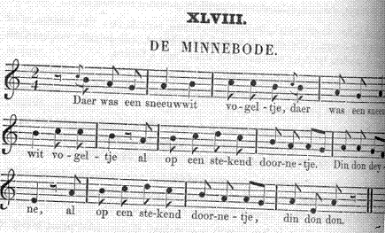

De Minnebode
Le Messager d'amour
Liederen uit de Westhoek (1856)
Chants de Flandre française collectés par Edmond de Coussemaker (1805 - 1876)
MélodieArrangement Christian Souchon (c) 2008


|
DE MINNEBODE 1. Daer was een sneeuwwit vogeltje Al op een stekend doornetje. Din don, enz. 2. - Wilt gy niet mynen bode zyn ? - Ik ben te kleyn een vogelkyn. Din don, enz. 3. - Zyt gy maer kleyne, gy zyt snel; Gy weet den weg ? - Ik weet hem wel. Din don, enz. 4. Hy nam den brief in zynen bek, En vloog er meê tot over 't hek. Din don, enz. 5. Hy vloog tot aen myn zoetliefs deur. - En slaep ye, of waek ye, of zyt gy doodt? Din don, enz. 6. - 'k En slape noch 'k en wake niet ; Ik ben getrouwd al een half jaer. Din don, enz. 7. -Zyt gy getrou,vd al een half jaer ; Hel dochte my weI duyzend jaer. Din don, enz. |
LE MESSAGER D' AMOUR. 1. Un pelit oiseau, blanc comme neige, se balançait sur une branche d'épine. Ding, dong, etc. 2. -" Veux tu être mon messager ? " -" Je suis trop petit, je ne suis qu'un petit oiseau. " Ding, dong, etc. 3. -" Si tu es petit, tu es subtil; tu sais le chemin? " -" Oui, je Ie connais bien. " Ding, dong, etc. 4. Il prit le billet dans son bec, et l'emporta en s'envolant. Ding, dong, etc. 5. Il s'envola jusqu'à la demeure de m'amie. -" Dors-tu, veilles-tu, es-tu trépassée?" Ding, dong, etc. 6. -" Je ne dors ni ne veille, Je suis mariée depuis une demi-année. " Ding, dong, etc. 7. -" Tu es mariée depuis une demi-année. Il me semblait que c'était depuis miIle ans. " Ding, dong, etc. |
Retour d'Angleterre